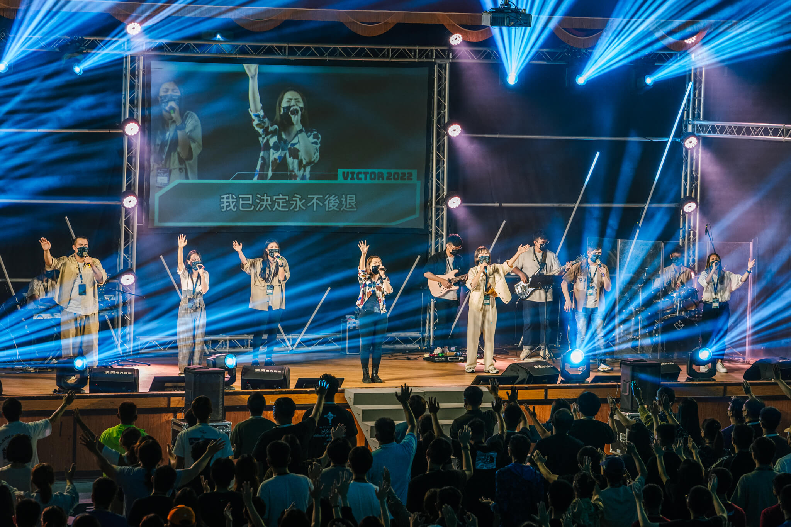

維克特的傳說營會
在舊約時代有三位勇士－沙得拉、米煞、亞伯尼哥，他們曾站立在異教金像面前，雖遭受強大的勢力壓迫、烈焰火窯的威嚇，他們依然勇敢站立，無懼生死之威脅，不向金像屈膝，持守對主的忠誠，毫不妥協，最終儘管被丟進火窯中，上帝卻拯救他們，毫髮無傷，大大得勝！

現今，上帝也要興起他的百姓，成為「維克特－VICTOR－神國度的得勝者」，在每年的寒假及暑假皆舉辦營會， 寒假為和平教會對內的建造，暑假則開放眾教會一同參與，甚至到海外舉辦， 在當中我們凝聚教會年輕人的目標與專注，提升每個人的生命、品格、人際關係與事奉， 激發創意、潛能、發展恩賜、建立團隊，預備一群基督的精兵。
並且營會強調：「我們不是參加營會，而是『建造教會』！」以「人人都是主辦單位」的概念，鼓勵每一位年輕人，不要只是來參加、當消費者，而是透過參與服事、投入讚美敬拜、熱切回應信息、經營宿舍生活…等等，成為營會的建造者。
營會結束前，更是呼召每一位弟兄姊妹獻上生命，接受打發與差派，進入校園與職場，發揮影響力，持續寫下維克特的傳說！
而在2021年，馬克祖克柏將Facebook改名為Meta，開啟「元宇宙」時代。和平教會亦將營會命名為《META VICTOR維克特的傳說》，渴望育成年輕人，興起神國新世代，從現在開始預備，建造未來教會，贏得未來世代，並進入神宇宙，經營治理元宇宙！
2022年，共有來自新北、桃園、彰化、台南、高雄、屏東、宜蘭、花蓮、台東…九個縣市的教會與牧者參與營會，兆昕牧師在其中傳講時代性的信息，聖靈非常強烈的運行！在最後一晚的復興特會中，眾教會的牧者們更是奔向台前、回應呼召、接受按手禱告、領受恩膏，這是維克特的傳說營會經歷前所未有的突破的一年！
回上一節
下一節